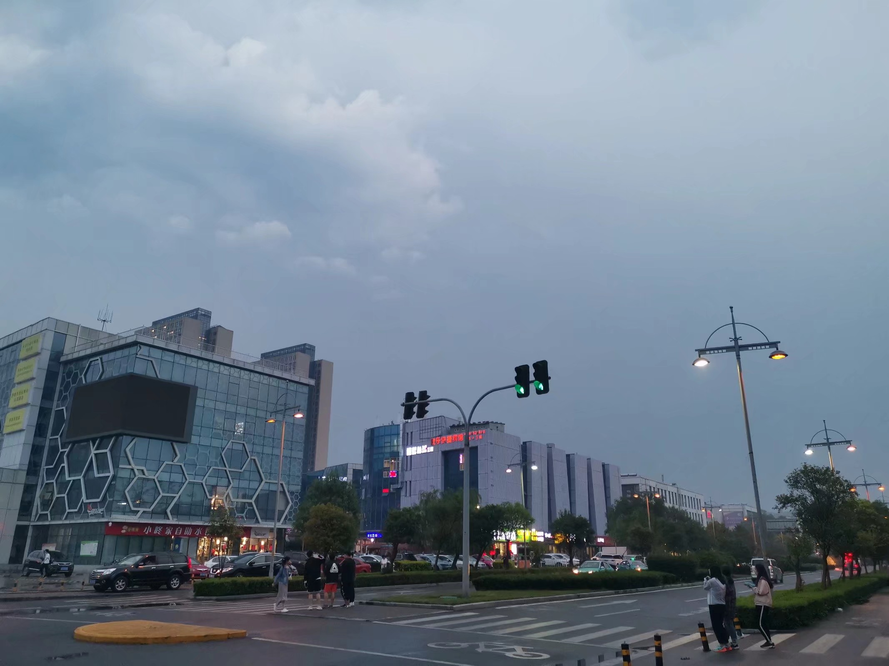

眼高手低，这是我从初中时代班主任就说我的一个词，但那时我根本不知道是什么意思，没问过别人也没查过，直到现在，我也没认真的看过释义，但却是隐隐约约的知道是什么。
从小我就有不止一个的宏图大志，也总是喜欢幻想，而且沉迷于中。于是也就总是造成一种错觉，只要想得出来，或者有个从不去执行的计划，这大业便成了……现在虽然还是偶尔有那种错觉，静下来想想真是可笑。
偶然在微信公众号上看到下面这篇文章，后来又在简书上看到，越来觉得很有感觉，甚至是，扎心。
到现在，看得也开了，也许被磨灭了锐气，那些宏图大略也不再了，可能是因为尝试过好多事情，然而却没有真正能成功的事情，总觉得活的像条狗，尽管外表光鲜……如今只想能够平平淡淡的生活，不求闻达于诸侯，大抵就是现在内心的真实愿望了吧。
以下是文。
感谢那些曾经打倒我的人
让我知道躺着有多么舒服
那些普通人，为什么非要站起来呢？
承认自己不是天才，不是主角，也没有什么不好的啊。
对于能力一般的人来说，有时候恰恰就是宏大的梦想拖累了他的一生。
年纪慢慢增长，我是真的特别怕和这一类长辈聊天。坐下还没聊两句，屁股都还没坐热，一张口就是问你“你对未来有什么打算啊。”
什么打算？您管得着吗？何况，你谁呀，我吃饱了撑的要和你花费心力口舌去给你编一个五年发展纲要吗？
再说，为什么一定要对未来有如此深远复杂，盘盘皆到的计划？为什么做每一件事情都是为了一些其他的目标而做的铺垫？为什么活着本身就不能是活着的意义？
当然我明白这些提问者在问什么。所谓未来有什么打算，就是问你：年轻人，告诉我你有什么样远大的志向，告诉我你想成为什么样牛逼的人，你再和我说说你又要打算怎么样去实现这些目标。
讲真我也很想知道他们到底想听什么。
这个时候你就必须扮演一个对自己的前途深谋远虑，把人生的一切可能面面俱到地考虑到，并且已经得出一个完整方案的人。
但是，这类问题真的很让人烦躁啊。其实我很想告诉他们，我真的没多大的志向。何况您自己也不是什么大人物，大家都是平凡人，别在这瞎折腾了成不？
我也拿不出，也懒得去计划一本个人版的三年计划和五年发展纲要。如果非要我拿出来，那我只能告诉你，我一年之内最大的目标是减肥，两年内最大的目标就是能自己养活自己，三年内最大的目标就是找个合适的对象。
当然我不会傻到真的和他们去说这些，从古至今，立大志的人多了去了，真正成事的又有几个？
有志者，事竟成。终究只是一句千古鸡汤罢了。
立志有什么难的。每一年的8月31号，每一家每一户的学生们都在立志——这学期一定要勤奋学习，上课绝对不能开小差。这件事我是干过的，你肯定也干过，结果不还是作业也不做，上课还照样睡觉看小说。
当年每个学期开学时定下的小目标，到期末的时候有几个人真的做到了？
我们大家都是普通人，但却从小被按照人才的心理去培养。能严格的订立目标并且长期自律的，而且最后逐步实现的人，一百个里也未必能有一个。
大多数人过的都还是随波逐流的生活不是吗？
可我认为，随波逐流并没有什么不好的啊，只能说明你是一个普通人，和绝大部分的人一样。我们的人生注定不会有惊天动地的伟业而已啊。
但可悲的是，为了不埋没那百中无一的天才，我们的教育系统，我们的评价体系，牺牲了99%的普通人的平凡与快乐。
天才价值观被高高挂起，灌输到每一个普通人的脑子里，诱导他们，威逼他们，恐吓他们。让他们在还小的时候立下了极其远大的志向，并且催促他们开始奔跑，逼他们夸父逐日，让他们大部分时间都在欲望和饥渴中煎熬，然后再让无情的现实狠狠击碎了99%普通人简单的梦想。
让他们在付出十分的努力之后开始怀疑人生，让他们在一次次下决心、做计划、苦苦煎熬和等待过后再去面对一切毫无卵用的失败结果。
我们一直以来都被告诫，唯有不断地进取，才能获取实力和资本，才能为自己赢得成长和成功的机会。
但似乎没有人告诉过我们，进取是很累的，要搭上一辈子的轻松时光；进取是很冒险的，可能会奋斗一辈子也依然没有任何改善。
反正一直努力就一定不会有错？这种鸡血天天打天天打，不是忽悠是什么呢？
现在大部分人的问题不是没有志向，而是志向太大了。所有人都觉得自己是万中无一的主角，每个人都觉得自己的人生不可以就此平凡，自己更不应该被埋没。
说到底吧，我觉得你就是太把自己当回事儿了。
事实上，现在但凡受过一点高等教育的人，在社会上摸打滚爬几年之后，都可以是比上不足比下有余的，江湖上多少有些朋友和资源，父母也不至于吃喝犯愁，你还要怎么滴？
一个人，一个普通人。
抱负太大，志向太大，未必是什么好事儿。
吾生也有涯而欲也无涯，以有涯逐无涯，殆矣。——庄子
志向就是欲望，它会让一个人看不见自己的分，也看不见自己的寸。要是所有的主观努力，都能让人逆天而行，那么这天道也太不值钱了。
天地辽阔，平凡过一生有什么不好的，非得跟自己较什么劲？
作者：治愈里
来源：简书
侵删
放一张傍晚的图
